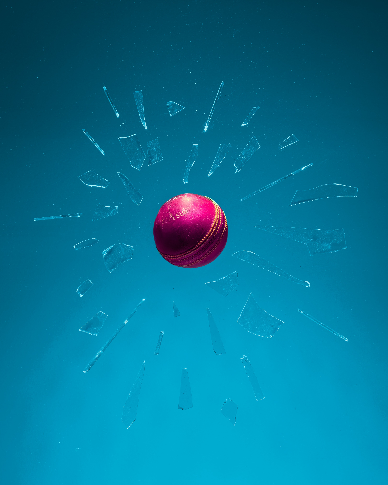

Photo by Taylor Flowe on Unsplash
In this post, I will be exploring another causal inference technique, which is regression discontinuity.
What is regression discontinuity?
Before we start, let’s look at some terminology:
Running variable: a.k.a. Forcing variable, the continuous variable that determines whether one is in the treatment or control group
Cutoff: the cutoff value on the running variable to determine whether one is in treatment or control group
Bandwidth: the bandwidth is used to determine the value range around the cutoff that should be included in the study
The idea is that the people near the threshold should be similar. This allows us to have the pseudo-treatment and control group to measure the causal effect.
Why use this method?
(Heiss 2023b) explained in his lecture slides that this method is less susceptible to p-hacking and selective publication than DID and IV.
Important considerations
Bandwidth
One of the important considerations is the bandwidth.
If the bandwidth is too narrow, we are throwing away a lot of the data in measuring the causal effect.
If the bandwidth is too wide, then the data points might not be comparable, which contradicts the similarity assumption we made in this analysis.
One method to overcome this is to double and halve the selected bandwidth and measure the effect.
Local average treatment effect (LATE)
Another issue is we are only measuring the average treatment effect for the people in the bandwidth (Heiss 2023b).
Hence, we are unable to make a population-level claim with a LATE.
Manipulation
People might “manipulate” the results if they are aware of the threshold.
The issue is that the people near the threshold are no longer comparable treatment/control groups.
To check this, we can run a McCrary density test.
Noncompliance
Sometimes the cutoff may not be very “clean” as well.
So, we could use fuzzy discontinuities.
We will leave the exploration of this technique to a future post.
Demonstration
In this post, I will be using the following packages to perform the analysis.
pacman::p_load(tidyverse, rdrobust, rddensity, broom, modelsummary)Import Data
I will be using the fake policy dataset shared by Professor Andrew Heiss on his teaching website. I have also referred to the materials and problem set he posted on the course website.
Refer to this link for the dataset.
program <- read_csv("data/attendance_program.csv")This is a fake dataset on the effect of a hypothetical program on hypothetical student grades. Students with less than 80% attendance would be required to attend a mandatory school attendance program.
At the end of their senior year, they will take a final test to assess their overall learning in the high school.
Below are the definitions of the columns in the dataset:
id: A randomly assigned student ID numberattendance: The proportion of days of school attended during a student’s junior year (ranges from 0 to 100)treatment: Binary variable indicating if a student was assigned to the attendance program during their senior yeargrade: A student’s final test grade at the end of their senior year
Visual Inspection
Overall
First, I will inspect the results.
ggplot(program, aes(attendance, grade, color = treatment)) +
geom_point(size = 0.9, alpha = 0.3) +
geom_vline(xintercept = 80)It seems like there is a discontinuity, especially around the attendance 80.
We could further add the regression lines to the chart.
Based on the chart, it looks like the program does have some effects on the student’s final exam results.
Check for any manipulation
One important check in any regression discontinuity analysis is to check for any manipulation around the threshold.
We can do that by plotting the histogram of attendance.
ggplot(program, aes(attendance, fill = treatment)) +
geom_histogram(binwidth = 2, color = "white", boundary = 80) +
geom_vline(xintercept = 80)It doesn’t seem like there is a big jump around the cutoff.
We can further check this by using McCrary density test.
density_test <- rddensity(program$attendance, c = 80)
summary(density_test)
Manipulation testing using local polynomial density estimation.
Number of obs = 1200
Model = unrestricted
Kernel = triangular
BW method = estimated
VCE method = jackknife
c = 80 Left of c Right of c
Number of obs 681 519
Eff. Number of obs 384 421
Order est. (p) 2 2
Order bias (q) 3 3
BW est. (h) 13.574 12.521
Method T P > |T|
Robust 0.7748 0.4384
P-values of binomial tests (H0: p=0.5).
Window Length / 2 <c >=c P>|T|
0.820 20 28 0.3123
1.640 50 63 0.2589
2.460 72 90 0.1815
3.280 102 110 0.6308
4.100 126 146 0.2493
4.920 149 172 0.2194
5.740 175 205 0.1367
6.560 198 232 0.1114
7.380 229 254 0.2748
8.200 258 280 0.3653From the results above, we noted the following:
The total number of data points in the data is 1,200
- Left side has 681 data and right side has 519
The algorithm uses a triangular kernel with the bandwidth of 13.574 and 12.521
- The effective sample sizes become 384 and 421 after applying the kernel
The p-value is 0.4384, suggesting that there is no statistical evidence of systematic manipulation of the running variables
We could also visualize the output by passing the created density_test object into rdplotdensity function as shown below.
mccrary_test <-
rdplotdensity(rdd = density_test
,X = program$attendance
,type = "both")Estimation
Next, I will start estimating the effect of the program.
Before fitting the linear model, I will center the attendance. This would make the intercept easier to interpret.
program <- program %>%
mutate(attendance_centered = attendance - 80)Linear model
First, I will use a linear model to estimate the effect of the program. I will be using all the full data to perform the estimation as well.
model_lm_all <-
lm(grade ~ attendance_centered + treatment
,data = program)
tidy(model_lm_all)# A tibble: 3 × 5
term estimate std.error statistic p.value
<chr> <dbl> <dbl> <dbl> <dbl>
1 (Intercept) 66.2 0.330 201. 0
2 attendance_centered 1.56 0.0203 76.6 0
3 treatmentTRUE 5.88 0.595 9.89 3.07e-22Based on the result above, the p-value for treatment is less than 0.05, suggesting that there is statistical evidence that the program effect is not zero.
We can control the effects of other covariates in the same formula as well.
However, the characteristics of the students may not be similar across the entire dataset.
The students are likely to be more similar to one another around the threshold.
With that, we could build the linear model with a smaller subset of the data.
We could compile the model results by using modelsummary function for further comparison.
modelsummary(list(model_lm_all, model_lm_5, model_lm_10))| (Intercept) | 66.191 | 64.050 | 64.195 |
| (0.330) | (0.859) | (0.601) | |
| attendance_centered | 1.560 | 2.148 | 2.026 |
| (0.020) | (0.272) | (0.097) | |
| treatmentTRUE | 5.884 | 12.340 | 11.869 |
| (0.595) | (1.575) | (1.094) | |
| Num.Obs. | 1200 | 330 | 640 |
| R2 | 0.907 | 0.169 | 0.505 |
| R2 Adj. | 0.907 | 0.163 | 0.503 |
| AIC | 7924.3 | 2228.8 | 4297.8 |
| BIC | 7944.6 | 2244.0 | 4315.6 |
| Log.Lik. | -3958.135 | -1110.378 | -2144.889 |
| F | 5823.048 | 33.144 | 324.837 |
| RMSE | 6.55 | 7.00 | 6.91 |
From the results above, we can see that the estimated effect will differ widely depending on the bandwidths we are using.
Then, how do we know which bandwidth should we be using?
Nonparametric estimation
Next, I will use a nonparametric approach to estimate the appropriate bandwidth for estimation.
I will use rdrobust function as shown below.
rdrobust(y = program$grade
,x = program$attendance
,c = 80) %>%
summary()Sharp RD estimates using local polynomial regression.
Number of Obs. 1200
BW type mserd
Kernel Triangular
VCE method NN
Number of Obs. 681 519
Eff. Number of Obs. 255 279
Order est. (p) 1 1
Order bias (q) 2 2
BW est. (h) 8.112 8.112
BW bias (b) 12.449 12.449
rho (h/b) 0.652 0.652
Unique Obs. 627 451
=============================================================================
Method Coef. Std. Err. z P>|z| [ 95% C.I. ]
=============================================================================
Conventional -12.013 1.394 -8.619 0.000 [-14.745 , -9.281]
Robust - - -7.244 0.000 [-15.473 , -8.883]
=============================================================================Below are some explanations of the results:
Similarly, the number of observations is 681 and 519 respectively
The bandwidth used is +/- 8.112
The default kernel is triangular
Effect is estimated to be 12.013
- The p-value is less than 0.05, suggesting that there is statistical evidence that the program effect is not zero
We can also plot out the results by using rdplot function.
rdplot(y = program$grade
,x = program$attendance
,c = 80)
We could modify the items in the graph through the usual ggplot approach.
However, we need to do an extra step to save the plot into an object and extract the plot by using $ as shown below.
plot_rdrobust <-
rdplot(y = program$grade
,x = program$attendance
,c = 80)plot_rdrobust$rdplot +
xlab("Attendance") +
ylab("Grade")Sentivity of the bandwidth
By default, rdrobust function will choose the bandwidth. We could also use rdbwselect function to see what other bandwidth choices we have.
rdbwselect(y = program$grade
,x = program$attendance
,c = 80) %>%
summary()Call: rdbwselect
Number of Obs. 1200
BW type mserd
Kernel Triangular
VCE method NN
Number of Obs. 681 519
Order est. (p) 1 1
Order bias (q) 2 2
Unique Obs. 627 451
=======================================================
BW est. (h) BW bias (b)
Left of c Right of c Left of c Right of c
=======================================================
mserd 8.112 8.112 12.449 12.449
=======================================================Including TRUE in the all argument will show us all the different bandwidths under different algorithms.
rdbwselect(y = program$grade
,x = program$attendance
,c = 80
,all = TRUE) %>%
summary()Call: rdbwselect
Number of Obs. 1200
BW type All
Kernel Triangular
VCE method NN
Number of Obs. 681 519
Order est. (p) 1 1
Order bias (q) 2 2
Unique Obs. 627 451
=======================================================
BW est. (h) BW bias (b)
Left of c Right of c Left of c Right of c
=======================================================
mserd 8.112 8.112 12.449 12.449
msetwo 11.921 7.160 19.516 11.541
msesum 7.172 7.172 12.341 12.341
msecomb1 7.172 7.172 12.341 12.341
msecomb2 8.112 7.172 12.449 12.341
cerrd 5.691 5.691 12.449 12.449
certwo 8.363 5.023 19.516 11.541
cersum 5.032 5.032 12.341 12.341
cercomb1 5.032 5.032 12.341 12.341
cercomb2 5.691 5.032 12.449 12.341
=======================================================Another common approach to performing sensitivity testing on the bandwidth is to use ideal bandwidth, twice the ideal and half the ideal (Heiss 2023a).
Twice the ideal
rdrobust(y = program$grade
,x = program$attendance
,c = 80
,h = 8.112 * 2) %>%
summary()Sharp RD estimates using local polynomial regression.
Number of Obs. 1200
BW type Manual
Kernel Triangular
VCE method NN
Number of Obs. 681 519
Eff. Number of Obs. 436 490
Order est. (p) 1 1
Order bias (q) 2 2
BW est. (h) 16.224 16.224
BW bias (b) 16.224 16.224
rho (h/b) 1.000 1.000
Unique Obs. 681 519
=============================================================================
Method Coef. Std. Err. z P>|z| [ 95% C.I. ]
=============================================================================
Conventional -11.327 0.980 -11.554 0.000 [-13.248 , -9.405]
Robust - - -8.613 0.000 [-15.499 , -9.753]
=============================================================================Half the ideal
rdrobust(y = program$grade
,x = program$attendance
,c = 80
,h = 8.112 / 2) %>%
summary()Sharp RD estimates using local polynomial regression.
Number of Obs. 1200
BW type Manual
Kernel Triangular
VCE method NN
Number of Obs. 681 519
Eff. Number of Obs. 122 146
Order est. (p) 1 1
Order bias (q) 2 2
BW est. (h) 4.056 4.056
BW bias (b) 4.056 4.056
rho (h/b) 1.000 1.000
Unique Obs. 681 519
=============================================================================
Method Coef. Std. Err. z P>|z| [ 95% C.I. ]
=============================================================================
Conventional -12.761 2.000 -6.380 0.000 [-16.681 , -8.841]
Robust - - -3.913 0.000 [-16.492 , -5.485]
=============================================================================Based on the results of the revised bandwidth, it doesn’t seem like there are any significant differences in estimated effect.
I will explore how to perform fuzzy regression discontinuity in the future post.
Conclusion
That’s all for the day!
Thanks for reading the post until the end.
Feel free to contact me through email or LinkedIn if you have any suggestions on future topics to share.
Refer to this link for the blog disclaimer.
Till next time, happy learning!

Photo by Pickled Stardust on Unsplash